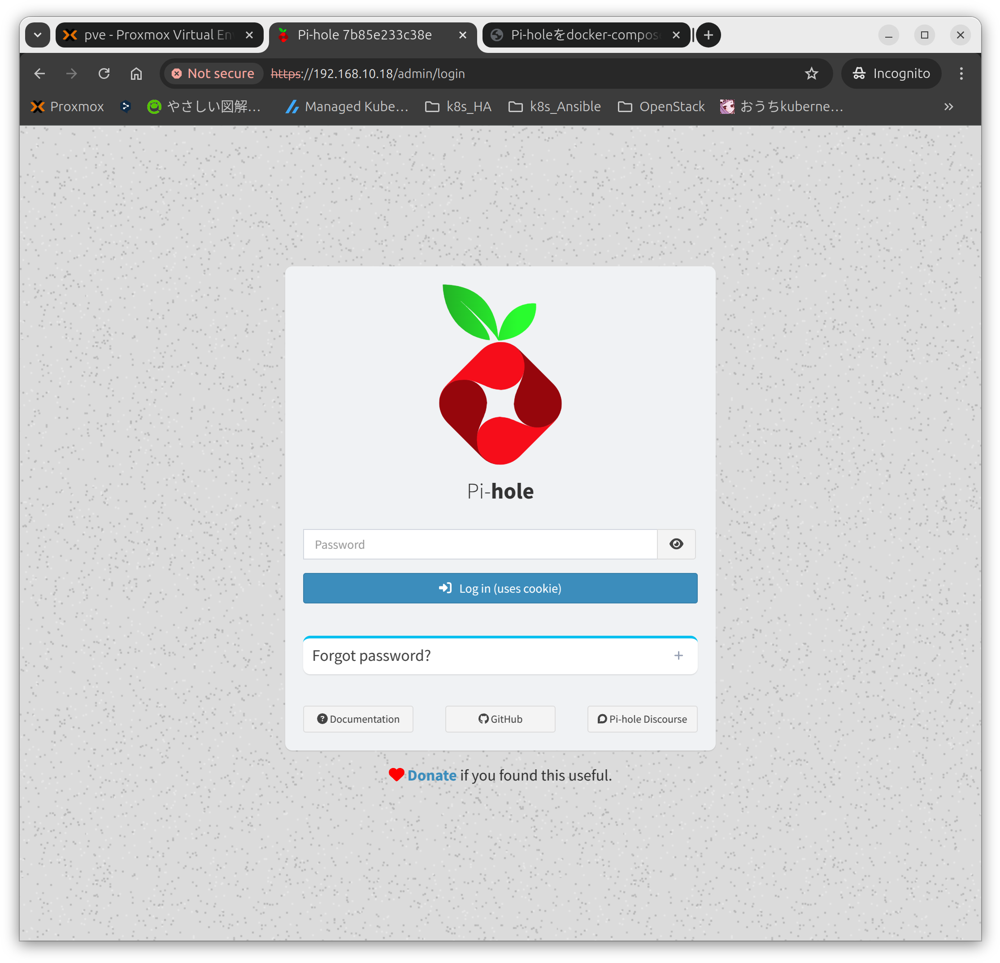
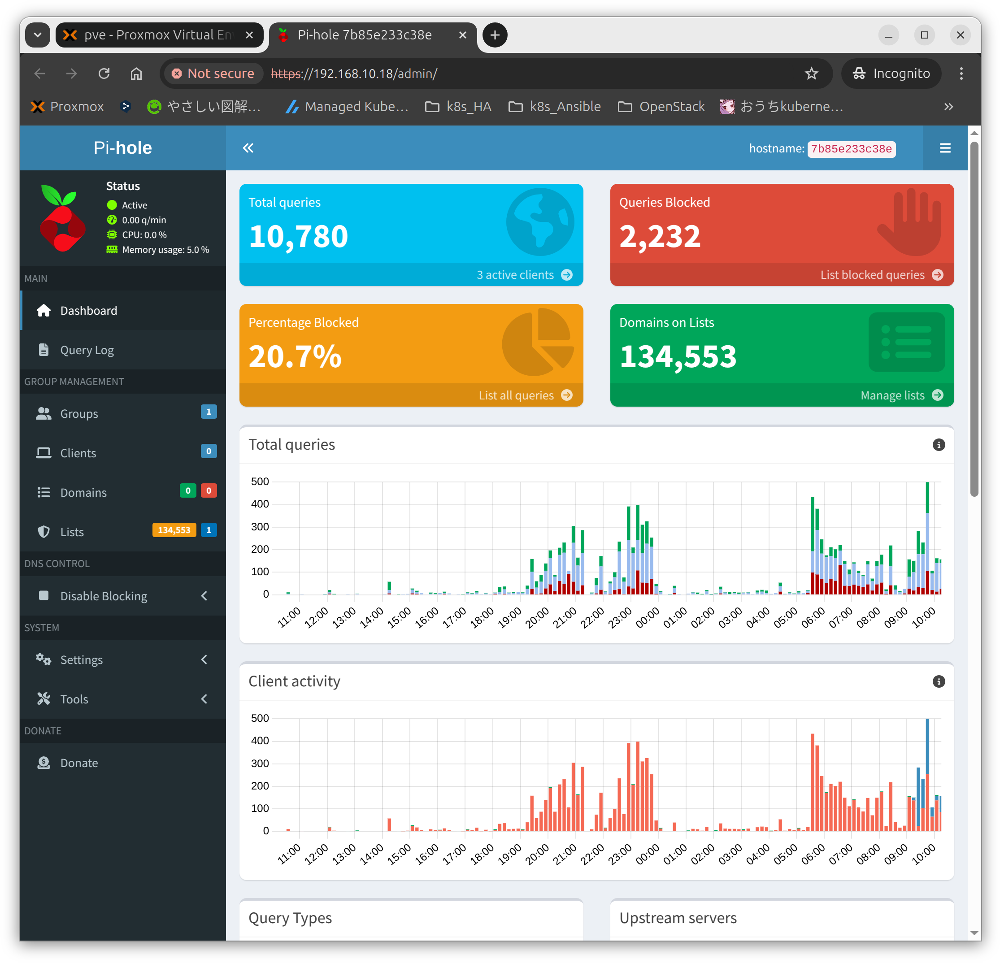
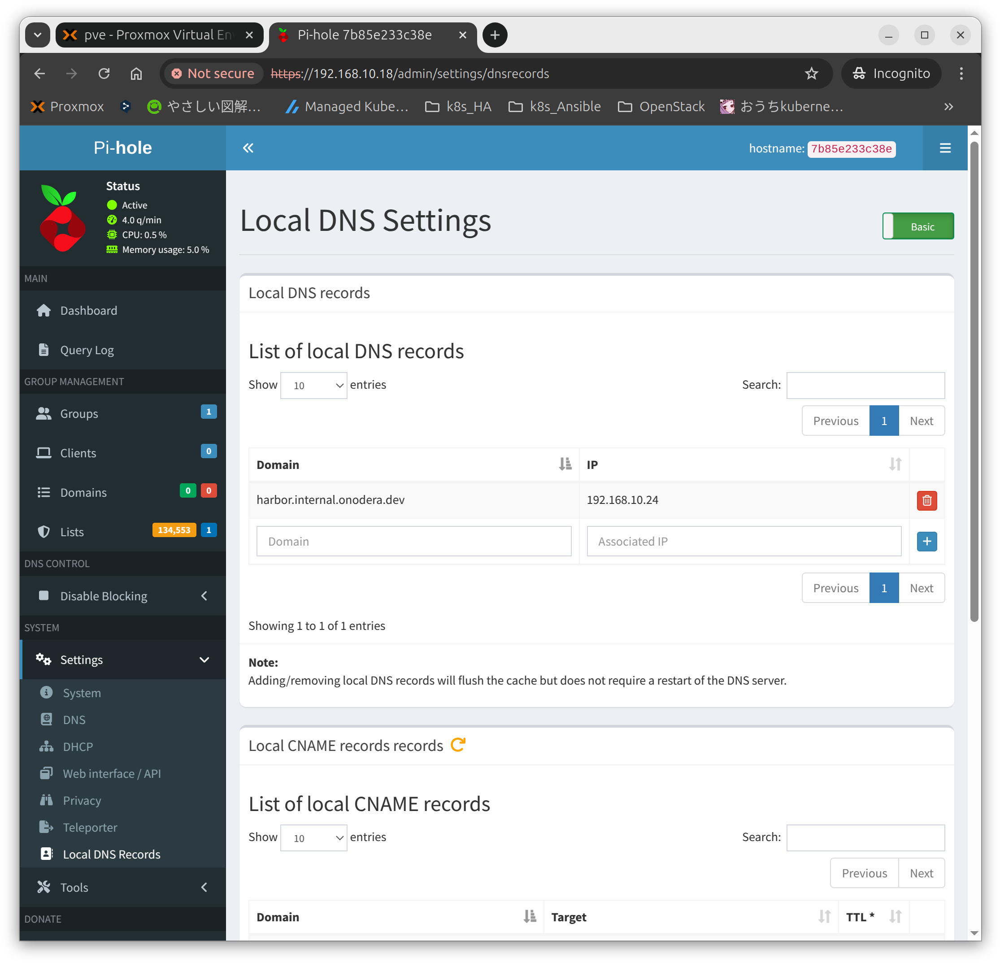

環境
- pihole:2025.03.0
- Ubuntu 24.04.2
- Docker Engine 28.0.1
- Docker Compose version v2.33.1
dockerとdocker-composeのインストール
1
2
3
4
5
6
7
8
9
10
11
12
13
|
# Add Docker's official GPG key:
sudo apt-get update
sudo apt-get install ca-certificates curl
sudo install -m 0755 -d /etc/apt/keyrings
sudo curl -fsSL https://download.docker.com/linux/ubuntu/gpg -o /etc/apt/keyrings/docker.asc
sudo chmod a+r /etc/apt/keyrings/docker.asc
# Add the repository to Apt sources:
echo \
"deb [arch=$(dpkg --print-architecture) signed-by=/etc/apt/keyrings/docker.asc] https://download.docker.com/linux/ubuntu \
$(. /etc/os-release && echo "${UBUNTU_CODENAME:-$VERSION_CODENAME}") stable" | \
sudo tee /etc/apt/sources.list.d/docker.list > /dev/null
sudo apt-get update
|
1
|
sudo apt-get install docker-ce docker-ce-cli containerd.io docker-buildx-plugin docker-compose-plugin
|
ポート53を開放する
ポート53が使用されているか確認する
1
|
sudo ss -lntp | grep 53
|
1
2
3
4
|
mao@pi-hole:~$ sudo ss -lntp | grep 53
LISTEN 0 4096 127.0.0.53%lo:53 0.0.0.0:* users:(("systemd-resolve",pid=673,fd=15))
LISTEN 0 4096 127.0.0.54:53 0.0.0.0:* users:(("systemd-resolve",pid=673,fd=17))
mao@pi-hole:~$
|
使用しないように、下記ファイルを編集する
1
|
sudo nano /etc/systemd/resolved.conf
|
下記項目を"no"へ変更する
1
2
|
[Resolve]
DNSStubListener=no
|
リスタートする
1
2
|
sudo systemctl restart systemd-resolved
sudo systemctl status systemd-resolved
|
Pi-holeを起動する
フォルダを作成します
composeファイルを作成します
1
2
3
4
5
6
7
8
9
10
11
12
13
14
15
16
17
18
19
20
21
22
23
24
25
26
27
28
29
30
31
32
33
34
35
36
37
38
39
40
41
42
43
44
45
|
# More info at https://github.com/pi-hole/docker-pi-hole/ and https://docs.pi-hole.net/
services:
pihole:
container_name: pihole
#image: pihole/pihole:latest
image: pihole/pihole:2025.03.0
# DHCPを機能させる場合は必須
#network_mode: host
ports:
# DNS Ports
- "53:53/tcp"
- "53:53/udp"
# Default HTTP Port
- "80:80/tcp"
# Default HTTPs Port. FTL will generate a self-signed certificate
- "443:443/tcp"
# Uncomment the line below if you are using Pi-hole as your DHCP server
#- "67:67/udp"
# Uncomment the line below if you are using Pi-hole as your NTP server
#- "123:123/udp"
environment:
# Set the appropriate timezone for your location (https://en.wikipedia.org/wiki/List_of_tz_database_time_zones), e.g:
#TZ: 'Europe/London'
TZ: 'Asia/Tokyo'
# Set a password to access the web interface. Not setting one will result in a random password being assigned
FTLCONF_webserver_api_password: 'maomao'
# If using Docker's default `bridge` network setting the dns listening mode should be set to 'all'
FTLCONF_dns_listeningMode: 'all'
WEBPASSWORD: maomao
#WEB_PORT: 8080
# Volumes store your data between container upgrades
volumes:
# For persisting Pi-hole's databases and common configuration file
- './etc-pihole:/etc/pihole'
# Uncomment the below if you have custom dnsmasq config files that you want to persist. Not needed for most starting fresh with Pi-hole v6. If you're upgrading from v5 you and have used this directory before, you should keep it enabled for the first v6 container start to allow for a complete migration. It can be removed afterwards. Needs environment variable FTLCONF_misc_etc_dnsmasq_d: 'true'
#- './etc-dnsmasq.d:/etc/dnsmasq.d'
cap_add:
# See https://github.com/pi-hole/docker-pi-hole#note-on-capabilities
# Required if you are using Pi-hole as your DHCP server, else not needed
- NET_ADMIN
# Required if you are using Pi-hole as your NTP client to be able to set the host's system time
- SYS_TIME
# Optional, if Pi-hole should get some more processing time
- SYS_NICE
restart: unless-stopped
|
起動コマンドは下記の通り
1
2
|
cd pi-hole
sudo docker compose up -d
|
停止コマンドは下記の通り
1
|
sudo docker compose down -v
|
管理画面にログインする
- https://192.168.10.18/admin/
ログインパスワードはcompose.yamlの"WEBPASSWORD:“で指定したものを入力する

WebGUIの画面の右上にある"hostname"はコンテナIDになっている
1
2
3
|
mao@pi-hole:~$ sudo docker ps
CONTAINER ID IMAGE COMMAND CREATED STATUS PORTS NAMES
7b85e233c38e pihole/pihole:2025.03.0 "start.sh" 12 days ago Up 12 days (healthy) 0.0.0.0:53->53/tcp, [::]:53->53/tcp, 67/udp, 0.0.0.0:80->80/tcp, [::]:80->80/tcp, 0.0.0.0:443->443/tcp, 0.0.0.0:53->53/udp, [::]:443->443/tcp, [::]:53->53/udp, 123/udp pihole
|

ローカルDNSとして使う
DNSレコードは"SYSTEM”>“Setting”>“Local DNS Records"に記載できる

参考URL